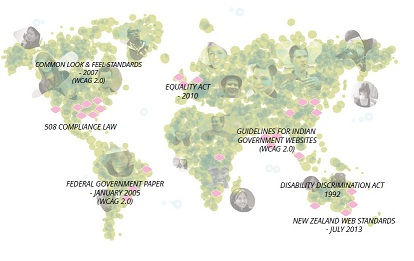

|  | Some organisations may consider their websites to be "accessible" when the websites are easily found by search engines. However, the core principle of web accessibility is not about whether people "can find you", it is about whether all people, irrespective of age, race, education or disability, can access to information in websites. |
| Resize text: Understanding Success Criteria 1.4.4 |
| Some organisations may consider their websites to be "accessible" when the websites are easily found by search engines. However, the core principle of web accessibility is not about whether people "can find you", it is about whether all people, irrespective of age, race, education or disability, can access to information in websites. |